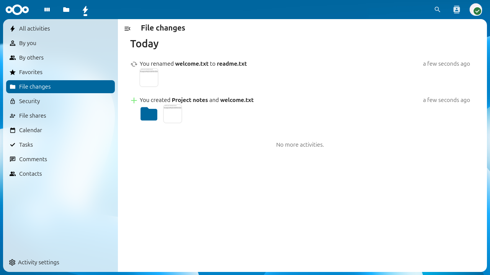

Ag baint úsáide as an aip Gníomhaíochta
Coinníonn an aip Gníomhaíochta súil ar gach rud a tharlaíonn i do Nextcloud. Taifeadann sé imeachtaí ar nós athruithe comhad, comhroinnt, nuashonruithe féilire, agus tuilleadh, ag tabhairt forbhreathnú croineolaíoch duit ar a tharla agus cathain.
Tá an aip Gníomhaíochta cumasaithe de réir réamhshocraithe.

An sruth Gníomhaíochta a thaispeánann na gníomhaíochtaí le déanaí go léir.
Ag féachaint ar do shruth gníomhaíochta
Chun do shruth gníomhaíochta a fheiceáil, cliceáil ar an deilbhín Gníomhaíocht sa bharra nascleanúna uachtarach nó téigh chuig /apps/activity i do bhrabhsálaí.
Taispeánann an sruth na himeachtaí go léir grúpáilte de réir lae. Taispeánann gach iontráil cad a tharla, cén comhad nó réad a raibh tionchar air, agus cé chomh fada ó shin a tharla an teagmhas. Feictear iontrálacha ó aipeanna eile ar nós Féilire, Teagmhálaithe, nó Talk sa sruth freisin má tá na haipeanna sin suiteáilte.
Gníomhaíochtaí scagtha
Cuireann an taobhbharra clé scagairí ar fáil chun an sruth gníomhaíochta a chúngú:
Taispeánann Gach gníomhaíocht gach rud.
Ní thaispeánann Tusa ach gníomhaíochtaí a spreag tú féin.
Ní thaispeánann Ó dhaoine eile ach gníomhaíochtaí arna spreagadh ag úsáideoirí eile.
Ní thaispeánann Athruithe comhaid ach imeachtaí comhad agus fillteán (cruthú, modhnú, scriosadh, athainmniú, bogadh).
D’fhéadfadh scagairí breise teacht chun cinn ag brath ar na haipeanna atá suiteáilte ar d’eispéireas Nextcloud (m.sh. Is Fearr Liom, Féilire, Teagmhálaithe).

Scagadh an sruth gníomhaíochta chun do ghníomhaíochtaí féin amháin a thaispeáint.

Sruth na gníomhaíochta scagtha chun athruithe comhaid amháin a fheiceáil.
Fotha RSS
Is féidir leis an aip Gníomhaíochta do shruth gníomhaíochta a sholáthar mar bheatha RSS, rud a ligeann duit do ghníomhaíocht Nextcloud a leanúint ó aon léitheoir beatha.
Chun an fotha RSS a chumasú:
Oscail an aip Gníomhaíochta.
Cliceáil Socruithe gníomhaíochta ag bun an bharra taoibh chlé.
Cumasaigh an lascthach Cumasaigh fotha RSS.
Cóipeáil an nasc chuig an bhfotha RSS a thaispeántar.
Note
Tá comhartha rúnda sa nasc chuig an bhfotha RSS. Ná roinn le daoine eile é, mar go dtugann sé rochtain neamhúdaraithe ar do shruth gníomhaíochta.
Socruithe fógra
Is féidir leat a roghnú conas is mian leat fógra a fháil faoi chineálacha éagsúla gníomhaíochtaí. Téigh go Socruithe > Pearsanta > Fógraí chun do chuid sainroghanna a chumrú.

Socruithe fógra pearsanta don aip Gníomhaíochta.
Tá na socruithe eagraithe de réir catagóire (m.sh. Comhaid, Comhroinnt, Féilire, teagmhálacha agus tascanna). Maidir le gach cineál gníomhaíochta is féidir leat a roghnú na nithe seo a leanas a fháil:
Fógraí Post (ríomhphost)
Fógraí Brú (soghluaiste agus deisce)
Seiceáil nó díthiceáil na boscaí comhfhreagracha chun fógraí a chumasú nó a dhíchumasú do gach cineál gníomhaíochta.
Minicíocht fógra ríomhphoist
Faoin maitrís fógraí is féidir leat a roghnú cé chomh minic a sheolfar fógraí ríomhphoist:
A luaithe is féidir seolann siad ríomhphost go gairid i ndiaidh gach imeachta.
Déanann fógraí uair an chloig a bhaisc agus a sheoladh uair san uair.
Seolann gach lá ríomhphost amháin in aghaidh an lae.
Seolann Seachtainiúil ríomhphost amháin in aghaidh na seachtaine.
Achoimre ar ghníomhaíocht laethúil
Is féidir leat ríomhphost achoimre laethúil a chumasú a sheoltar gach maidin ina bhfuil forbhreathnú ar ghníomhaíochtaí an lae roimhe sin. Tá an rogha seo ar fáil mar lasc ar leithligh faoin socrú minicíochta fógraí:
Seiceáil Seol achoimre ar ghníomhaíocht laethúil ar maidin chun é a chumasú.
Tá an achoimre laethúil neamhspleách ar na fógraí in aghaidh an imeachta thuas agus cuireann sé achoimre áisiúil ar fáil ar an ngníomhaíocht go léir.